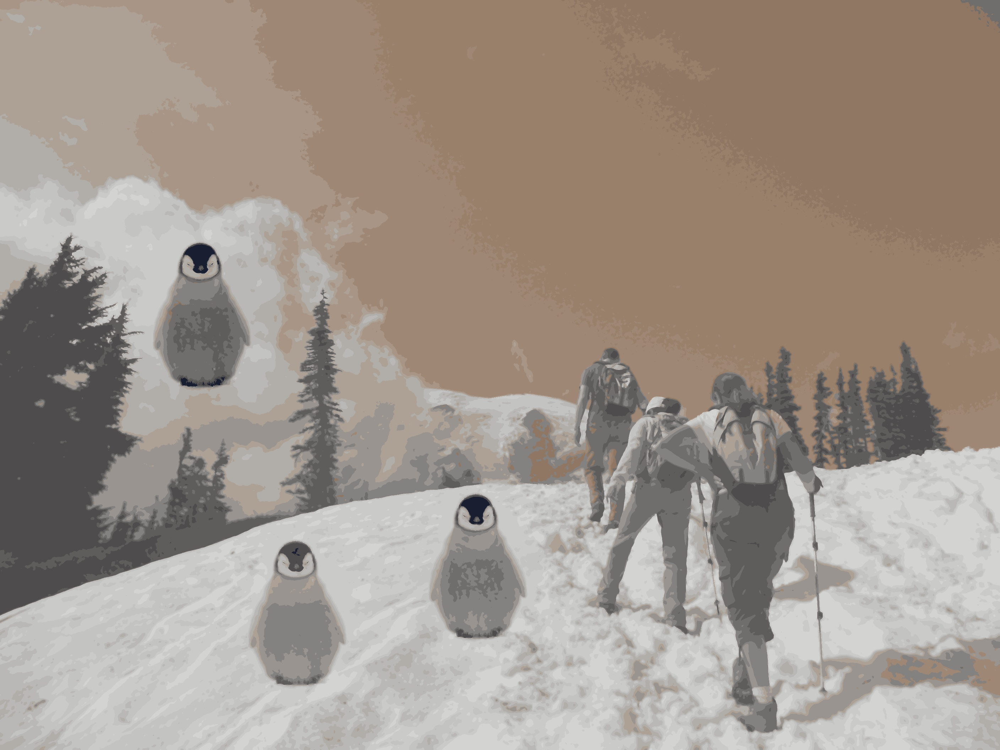
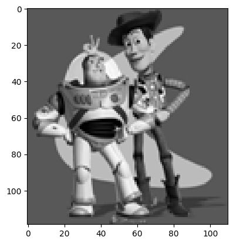
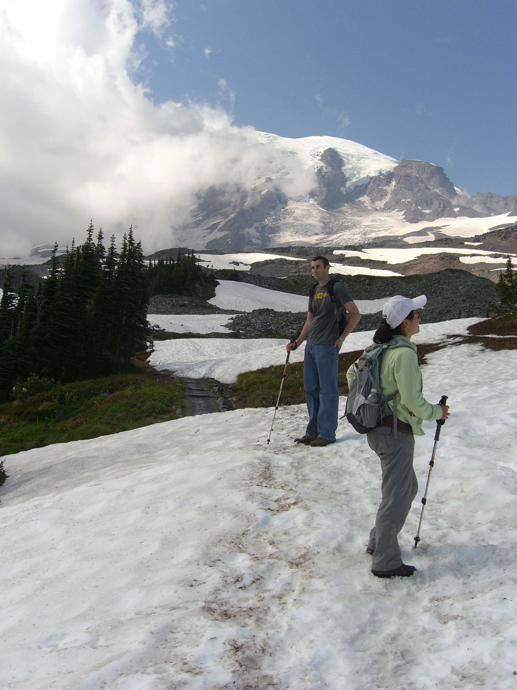
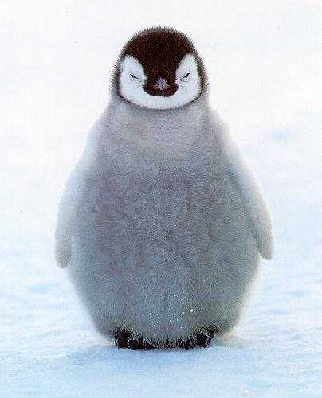
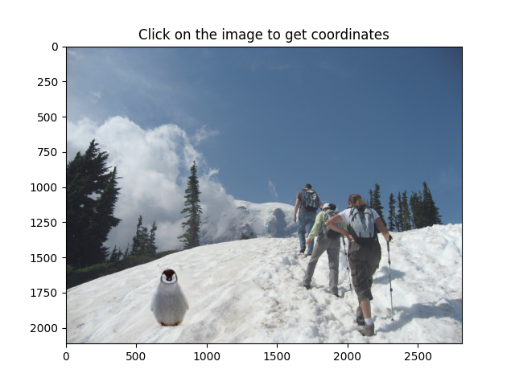
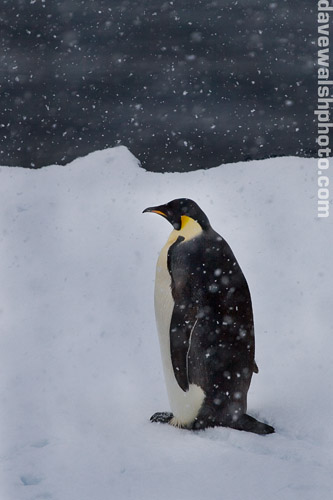
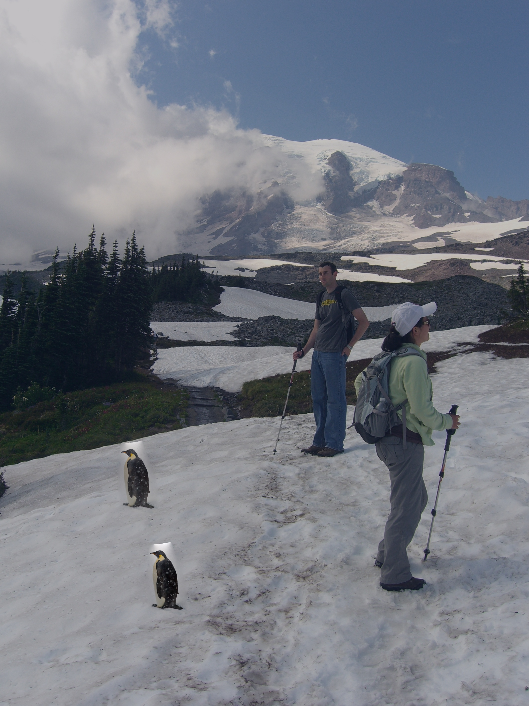
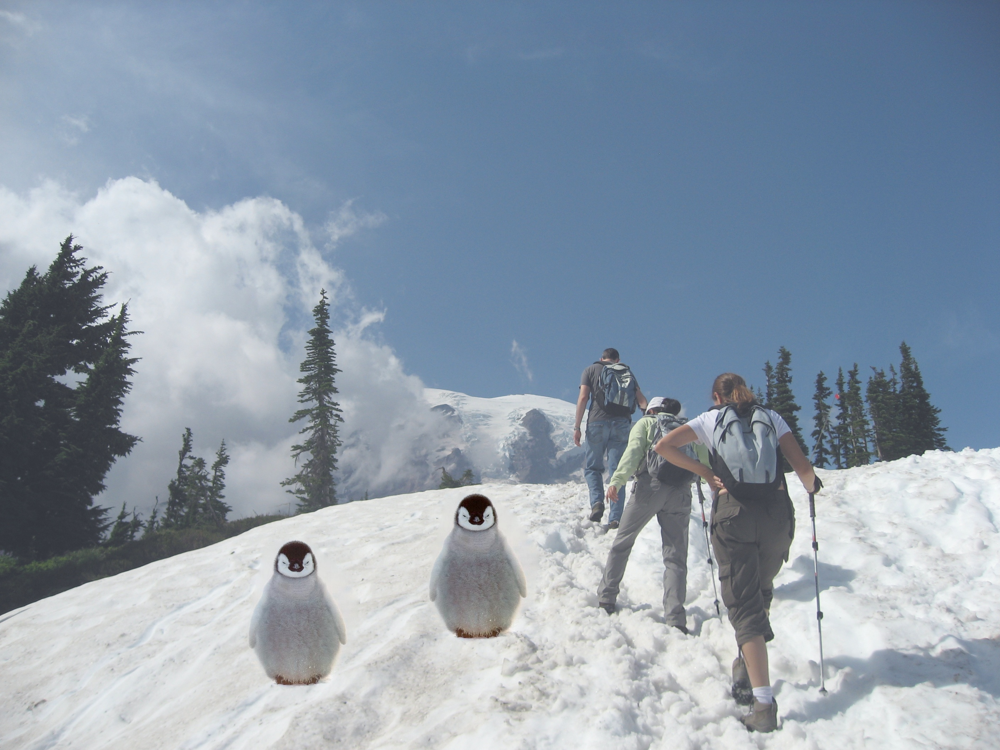
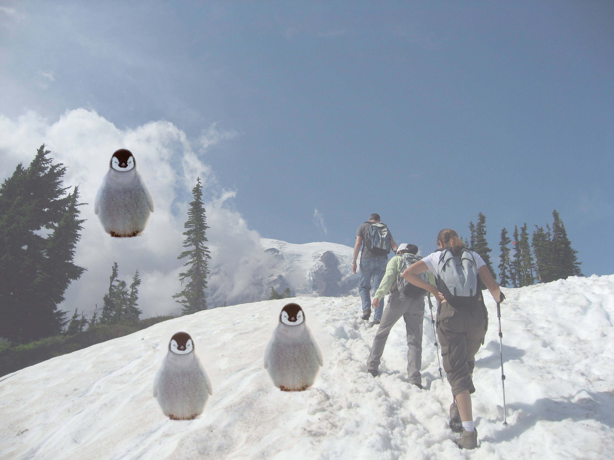
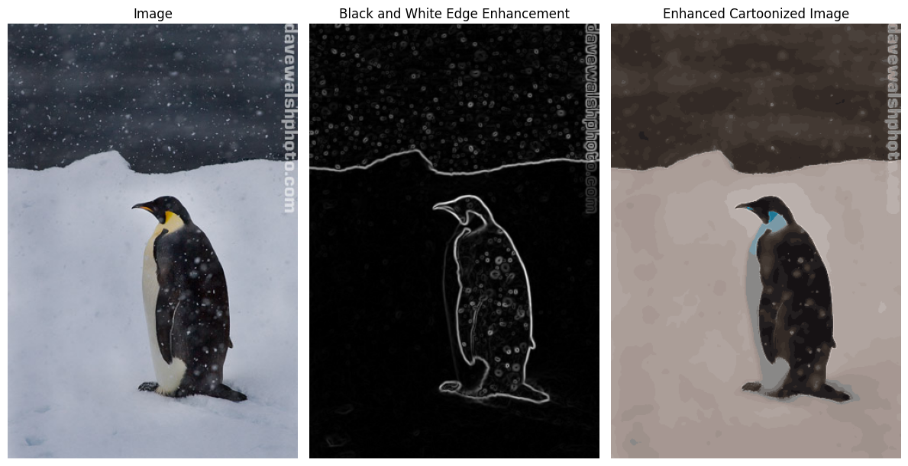

Precanned, Gradient Domain Fusion

This project explores the concept of Gradient Domain Fusion (GDF), an image processing technique that allows us to blend images in a seamless way by operating in the gradient domain. The objective of this project was to implement the core technique of Poisson blending, which is a key application of GDF. In particular, we implemented both a small-scale version of the technique for a toy problem, and then extended it to larger, more complex images using Poisson equations.
For more information, check out the original instructions for the project here!
Part 1 - Toy Problem
In this first part of the project, we implemented a simplified version of Gradient Domain Fusion to better understand the mechanics of the algorithm before scaling it up to larger images. The primary task was to solve for the gradients \( v \), which are defined as the difference between the source image \( I_{src} \) (the image we want to blend) and the target image \( I_{target} \) (the background image we are blending the source into).
The process involves solving a set of Poisson equations to compute the values of the gradient field \( v \), which minimizes the error between the source and target images. This can be formulated as a system of linear equations that we solve iteratively.
The toy problem is based on blending a face into a background. We computed the gradients in the image domain, and then used the solution to reconstruct the image. The goal was to minimize the difference in the gradient domain between the two images, while preserving the color and intensity of the target image as much as possible.
The error, which measures the difference between the original and reconstructed images, was found to be around \( \sim 0.001 \). This value can vary slightly with each run, but it indicates that the gradients were successfully preserved during the blending process.
Original
Reconstructed

Part 2 - Performing Poisson Blending
With the toy problem as a foundation, we moved on to implementing the full Poisson blending algorithm, which is the core of Gradient Domain Fusion. Poisson blending solves the Poisson equation:
\[ \nabla^2 f = \nabla \cdot v \]
(fancy equation I found on the web). The solution of this equation gives us a new image that incorporates the gradients from the source image, while preserving the overall structure and color information of the target image.
We solved this equation using least squares, which compute the values of the unknowns (the pixel intensities in the target region) that satisfy the equation above. This process is computationally intensive, ESPECIALLY if the images are \( \geq 1024 \) px , but it allows for smooth and natural blending, with minimal visible seams between the source and target images.
Poisson Blending Results
Here, we showcase the results of applying Poisson blending to various pairs of images. The first row shows the blending of a snow background with a penguin, while the second row blends a different snow background with another penguin.
Snow (Background) |
Penguin |
Poisson Blended Result |
Anotha One (Background) |
Penguin |
Poisson Blended Result |
Additional Fun with Poisson...
In my submission, I also implemented a tool to modify the position of the blended object dynamically. This tool allows me to select different positions in the image and automatically place the object there. This functionality was implemented in a modified version of the `utils.py` interface, and the full flow can be found in the `run.py` file. The images below show some examples created using this tool.
Uno |
Dos |
Tres |
Bells and Whistles
As part of the advanced processing steps, I also experimented with additional gradient domain-based techniques. These included enhancing the image with black and white filters and applying a cartoonization effect to the images.
Gradient-Based Processing
